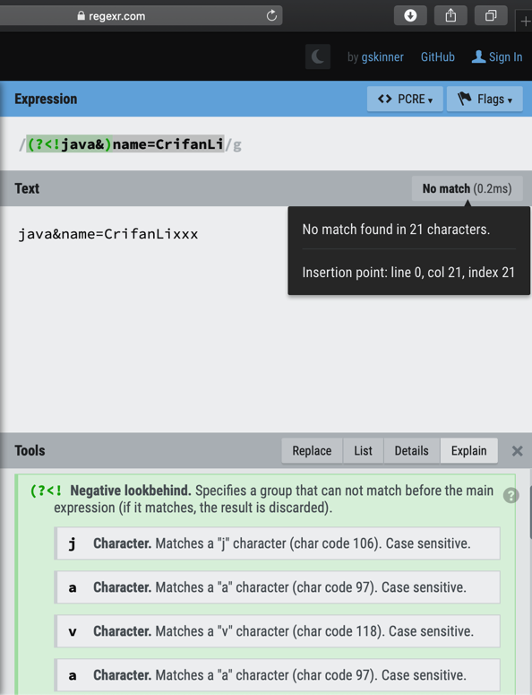

举例解释
如前面概述look around包含：
positive lookahead assertion：(?=xxx)negative lookahead assertion：(?!xxx)positive lookbehind assertion：(?<=xxx)negative lookbehind assertion：(?<!xxx)
用图解释：

举例来说明：
- 需求：
- 要匹配的，普通的，字符串：
&name=CrifanLi- 进一步要求：匹配的字符的 前面 或 后面 也有些其他，符合特定的规则的，字符才匹配，否则不匹配
- 举例：
- 后面也有字符，且是&language=xxx，其中xxx是字母，才匹配，否则不匹配
- 比如：
- 匹配：
yyy&name=CrifanLi&language=python - 不匹配：
yyy&name=CrifanLi&gender=male
- 匹配：
- 比如：
- 前面也有些字符，且是date=2020，才匹配，否则不匹配
- 比如：
- 匹配：
date=2020&name=CrifanLiyyy - 不匹配：
nationality=china&name=CrifanLiyyy
- 匹配：
- 比如：
- 后面不能出现也有些字符，比如&OS=xxx，其中xxx是数字，才匹配，否则不匹配
- 比如
- 匹配：
xxxname=CrifanLi&OS=mac - 不匹配：
xxxname=CrifanLi&OS=20200205
- 匹配：
- 比如
- 前面不能出现某些字符，比如java&，才匹配，否则不匹配
- 比如
- 匹配：
python&name=CrifanLixxx - 不匹配：
java&name=CrifanLixxx
- 匹配：
- 比如
- 后面也有字符，且是&language=xxx，其中xxx是字母，才匹配，否则不匹配
- 举例：
- 进一步要求：匹配的字符的 前面 或 后面 也有些其他，符合特定的规则的，字符才匹配，否则不匹配
- 背景知识：相对于，当前要匹配的字符串，从左向右 的方向属于 前进的方向
后面=向前看=向右看=向⬅️看=look ahead前面=向后看=向左看=向⬅️看=look behind- 用图举例

&name=CrifanLi 你站在 这里
你站在 这里
- 将上述需求，转换成正则表达式
&name=CrifanLi(?=&language=[a-zA-Z]+)- 匹配：
yyy&name=CrifanLi&language=python - 不匹配：
yyy&name=CrifanLi&gender=male
- 匹配：
(?<=date=2020)&name=CrifanLi- 匹配：
date=2020&name=CrifanLiyyy - 不匹配：
nationality=china&name=CrifanLiyyy - 注意：向后看look behind，只支持 固定长度fixed length的内容的匹配
- 不支持这种 data=\d+ 的不固定的写法，否则会报错：
- 不支持这种 data=\d+ 的不固定的写法，否则会报错：
- 匹配：
name=CrifanLi(?!&OS=\d+)- 匹配：
xxxname=CrifanLi&OS=mac - 不匹配：
xxxname=CrifanLi&OS=20200205
- 匹配：
(?<!java&)name=CrifanLi- 匹配：
python&name=CrifanLixxx - 不匹配：
java&name=CrifanLixxx- 
- 匹配：
- 要匹配的，普通的，字符串：